| Name | Image | Rarity | Type | Cost | Description |
|---|
| Bishop's Prayer | 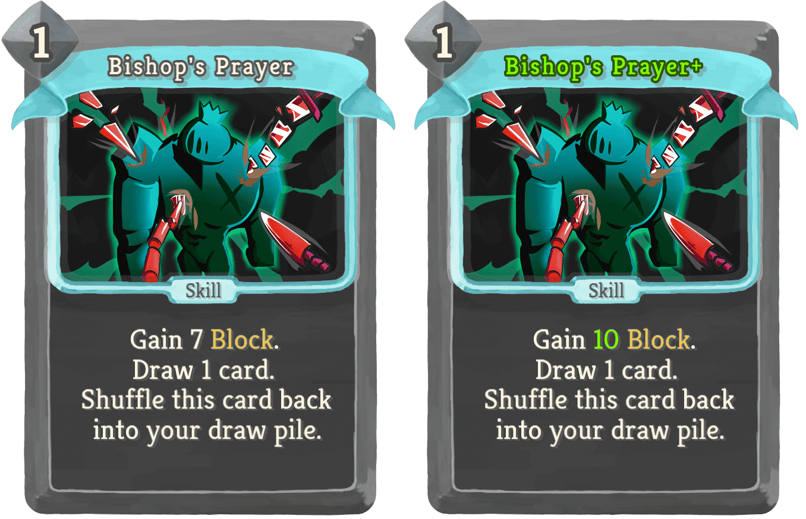 | Special | Skill | 1 | Gain 7 (10) Block. Draw 1 card. Shuffle this card back into your draw pile. |
| Chilled | 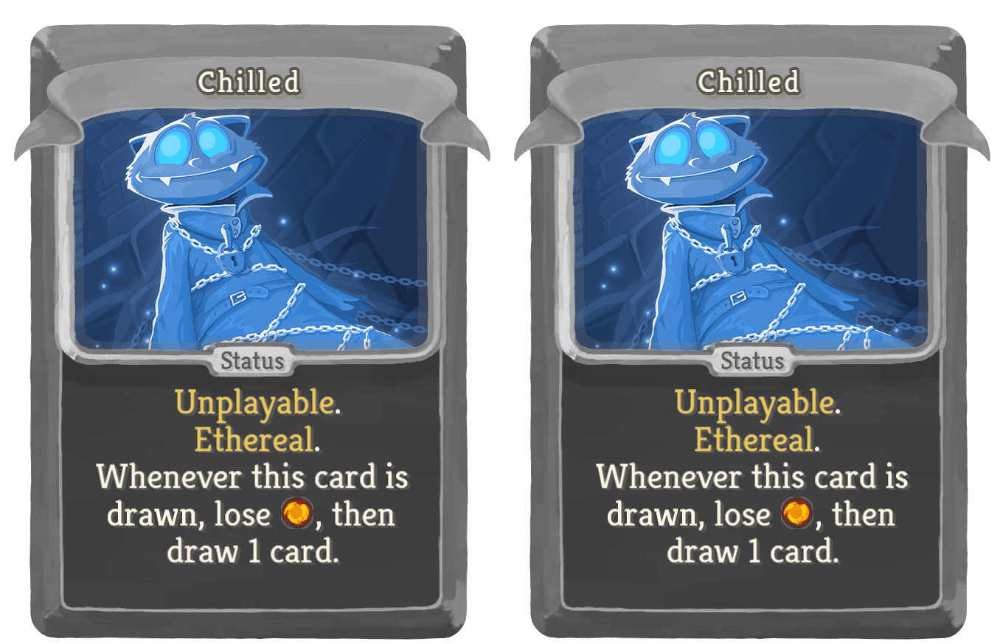 | Special | Status | | Unplayable. Ethereal. Whenever this card is drawn, lose [E] , then draw 1 card. |
| Chilled | | Special | Status | | Unplayable. Ethereal. Whenever this card is drawn, lose [E] , then draw 1 card. |
| Chilled | | Special | Status | | Unplayable. Ethereal. Whenever this card is drawn, lose [E] , then draw 1 card. |
| Chilled | | Special | Status | | Unplayable. Ethereal. Whenever this card is drawn, lose [E] , then draw 1 card. |
| Chilled | | Special | Status | | Unplayable. Ethereal. Whenever this card is drawn, lose [E] , then draw 1 card. |
| Chilled | | Special | Status | | Unplayable. Ethereal. Whenever this card is drawn, lose [E] , then draw 1 card. |
| Chilled | | Special | Status | | Unplayable. Ethereal. Whenever this card is drawn, lose [E] , then draw 1 card. |
| Chilled | | Special | Status | | Unplayable. Ethereal. Whenever this card is drawn, lose [E] , then draw 1 card. |
| Chilled | | Special | Status | | Unplayable. Ethereal. Whenever this card is drawn, lose [E] , then draw 1 card. |
| Chilled | | Special | Status | | Unplayable. Ethereal. Whenever this card is drawn, lose [E] , then draw 1 card. |
| Cursed Tapestry |  | Special | Attack | 0 | Fleeting. Lose 5 HP. Deal 30 (50) Damage. Gain a random Common Relic. |
| Dark Enchantment | 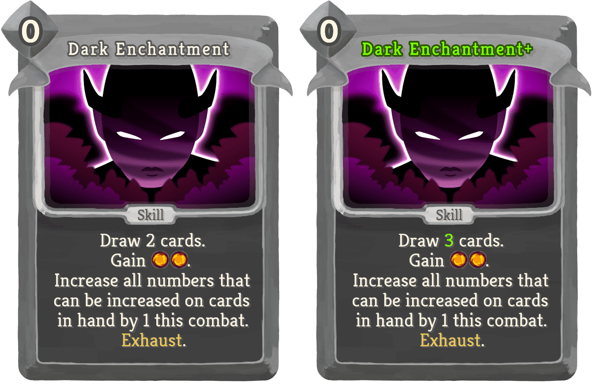 | Special | Skill | 0 | Draw 2 (3) cards. Gain [E] [E]. Increase all numbers that can be increased on cards in hand by 1 this combat. Exhaust. |
| King's Command |  | Special | Skill | | Unplayable. When you play another card, deal 4 (6) damage to a random enemy. |
| Knight's Maneuver |  | Special | Power | 2 (1) | Choose: Gain 3 Dexterity and lose 1 Strength, or gain 3 Strength and lose 1 Dexterity. |
| Pawn's Advance | 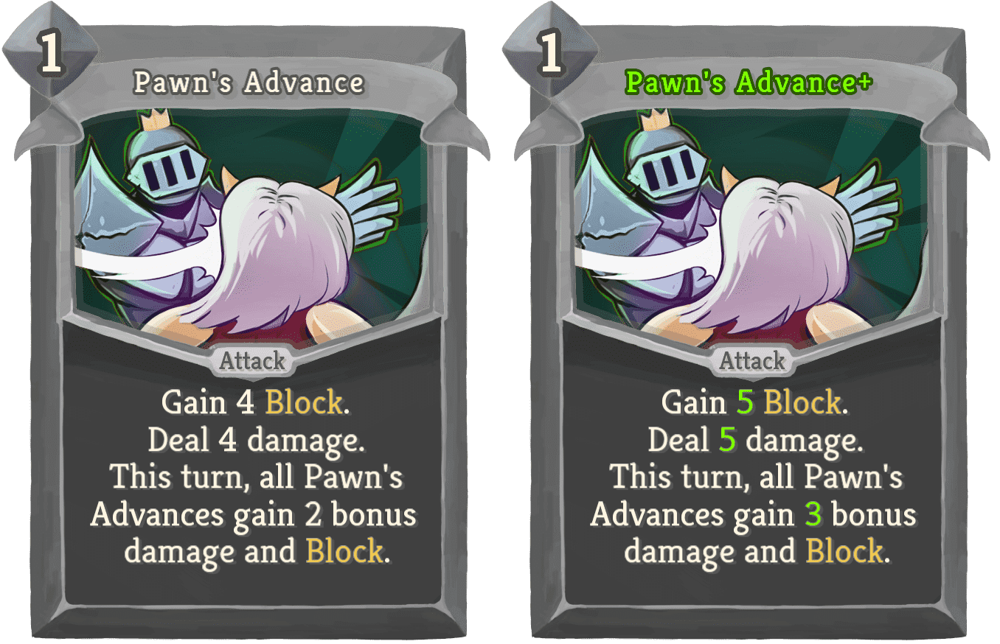 | Special | Attack | 1 | Gain 4 (5) Block. Deal 4 (5) damage. This turn, all Pawn's Advances gain 2 (3) bonus damage and Block. |
| Queen's Grace |  | Special | Attack | 3 | Gain 10 Block. Deal 10 damage. Draw 3 (4) cards. Gain [E] ([E]). Exhaust. |
| Rook's Charge |  | Special | Attack | 2 | Deal 8 (10) damage. Repeat for each other Attack in your hand. |
| Slime Elixir |  | Special | Skill | 0 | Retain. Draw 2 (4) cards. Shuffle a Slimed into your draw pile. Exhaust. |
| Wind Strike |  | Special | Attack | 1 | Each Wind Strike increases the damage and block gain by 3 (6). Choose One - Deal 5 (8) damage and Gain 5 (8) Block or shuffle a copy of this into your draw pile. |
| Wish Granted |  | Special | Skill | 0 | (Retain.)Wish for the PERFECT Upgraded Rare card to add to your hand. Exhaust. |
| Wish for Knowledge | 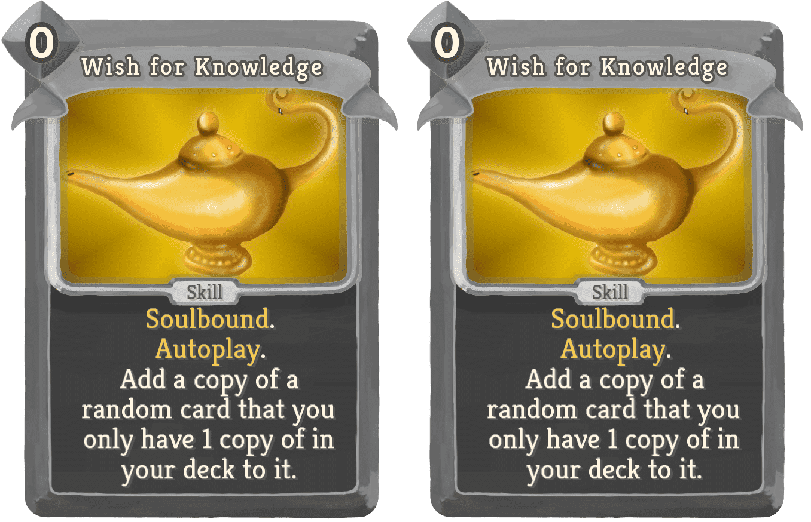 | Special | Skill | 0 | Soulbound. Autoplay. Add a copy of a random card that you only have 1 copy of in your deck to it. |
| Greedy |  | Special | Curse | | Unplayable. Ethereal. When drawn, lose 7 Gold. |
| Prick | 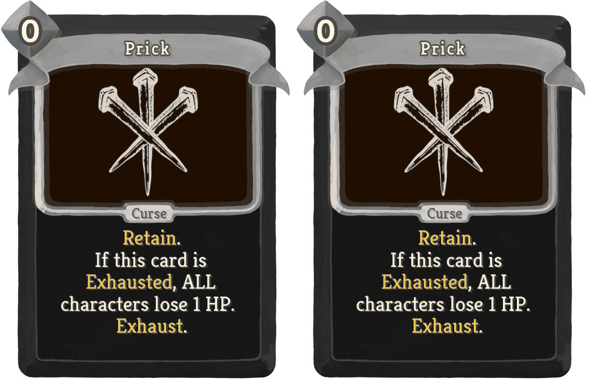 | Special | Curse | 0 | Retain. If this card is Exhausted, ALL characters lose 1 HP. Exhaust. |
| Name | Image | Tier | Pool | Description | Flavor |
|---|
| Alphabet Soup | | Special | | At the start of each combat, choose 1 of 3 cards that start with a certain letter to add into your hand. Whenever you play a card that starts with that letter, gain 4Block and [E] . | Letterlicious. |
| Armorer's Headpiece | | Special | | You feel more talkative and start combat with 1 Dexterity. | Part of the Flock! |
| Bucket Of Slime | 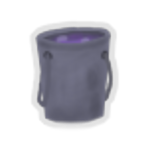 | Special | | The first time you play each card in your deck each combat, gain 1Block. | A bucket of slime! Useful and multipurpose! Huh? What purpose? I'm just a salesman, figure that out yourself. |
| Cardboard Heart | | Special | | When obtained, picks 3 random cards. Choose 1 of 3 of the set to add into your hand with Retain each combat. | Slain adventurer's decks form this lump of fibrous board. |
| Cleric's Blessing | | Special | | While in the BattleTower, at the start of each combat, gain 2Dexterity. | That guy sure is friendly. |
| Cultist War Banner | 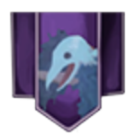 | Special | | At the start of combat, gain 1Ritual and lose 2Strength. | Caw? Caw Caw! Caw. caw. |
| Cursed Doll |  | Special | | Whenever you lose HP, ALL enemies also lose twice that much HP. | It's filled with pins and needles . . . and it looks surprisingly like you. |
| Dijinn Lamp | | Special | | At the start of combat, shuffle a WishGranted into your draw pile. | As you rub it, you can feel the faintest echoes of infinite power. |
| Gorgon Head |  | Special | | The first time each combat that each enemy intends to attack you multiple times in a turn, it loses 1 temporary Strength. | Still dangerous to look at. |
| Hollow Soul |  | Special | | At the start of combat, shuffle a Void into your draw pile. | You never knew how important it was to you until it was gone. |
| Iron Pot Helmet | 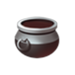 | Special | | When you play a Defend, gain 3Block. | It once was special and enchanted. Now it's just a big hunk of metal. |
| Jade Idol |  | Special | | On pick-up add a WindStrike to your deck. The first Strike you play each combat is played twice. | Immaculately carved, and defying physics just one of these with little effort becomes very powerful given time. |
| Louse War Banner | 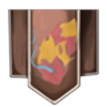 | Special | | At the start of combat, gain 10CurlUp. When CurlUp is triggered, Block is not lost that turn. | Be one with the bug. |
| Lucky | | Special | | At the start of the Boss combat of this Battle Tower, gain 1 Strength and 1 Dexterity. | Those who give back to the less fortunate always find themselves rewarded somehow. |
| Nob War Banner | 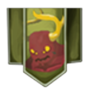 | Special | | The first 3 enemy actions each combat that are not attacks grant you 1Strength. Start each combat with 2Weak. | RRrroohrrRGHHhhh!! |
| Otto's Deck | 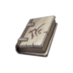 | Special | | Upon pickup, replace your basic Strikes and Defends with Pawn'sAdvances. Obtain a random Uncommon and RareChessCard. | Otto's deck is chess themed. Hm. |
| Promise of Gold |  | Special | | Gain 100 gold when you defeat the BattleTower boss. | It will all be worth it. |
| Queen's Pawn |  | Special | | If the first and last card you play in a turn is an Attack, deal 5 damage to a random enemy. If the first and last card you play in a turn is a Skill, gain 5Block. | The most important and loyal of pieces. |
| Ruby Fragment |  | Special | | Once per combat, after dealing 15 unblocked damage in a combat, gain [E] and draw 2 cards. | Just a shard of the Justicar's power, seems offence will be rewarded by his divine. |
| Scary Nail | | Special | | You have 1 additional Strength for every enemy in combat. | Taken out of the Totem, this would fit great into a baseball bat. |
| Sentry Core | | Special | | At the start of every odd turn, deal 9 damage to a random enemy. | An ominous energy still pulses inside, long after removing it. |
| Slime-Filled Flask | | Special | | At the start of each combat, add a SlimeElixir to your hand. | Is this even safe to drink? |
| Snecko War Banner |  | Special | | Start each combat Confused. Draw 3 cards at the start of the first turn of combat. | This pattern. It's... mesmerizing. |
| Steelbound Codex |  | Special | | Whenever you spend [E] [E] [E] on Attacks in one turn, your next Attack costs 0. | Ok Intellij, why do you want to autocorrect "Steelbound" to "Spellbound"?!? |
| Sweaty Armband |  | Special | | Whenever you receive unblocked attack damage, gain 1Strength. | No pain, no gain. |
| Torch | | Special | | While in the BattleTower, at the start of combat, shuffle 2 copies of your chosen card into your draw pile. | A simple torch that glows with an emerald fire. It seems to weaken the further it travels. |
{kind=link}
{kind=link}
{kind=link}
{kind=link}
{kind=link}


{kind=link}